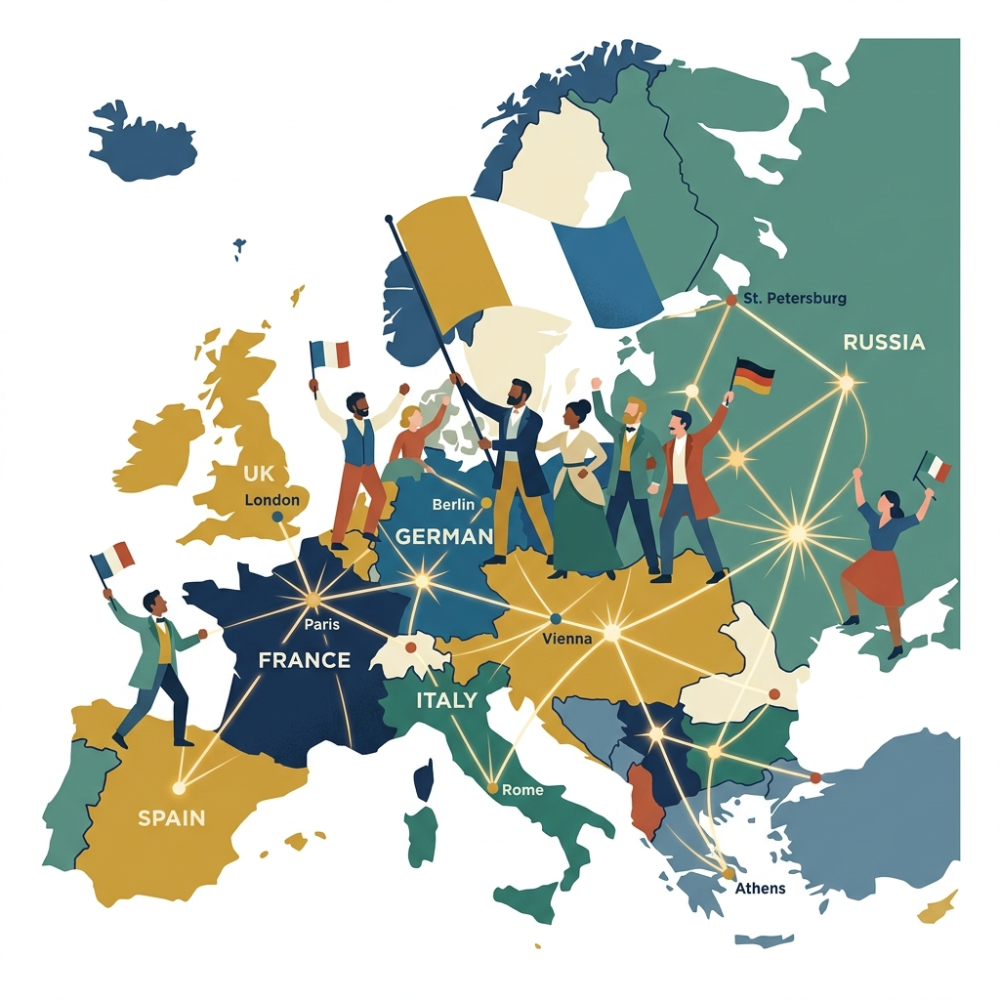

Vardaan Learning Institute
ICSE Class 10 History • Chapter Notes
🌐 vardaanlearning.com📞 9508841336Team Vardaan ❤️
Chapter 1: The Rise of Nationalism in Europe

Nationalism is the feeling of love, pride, and loyalty towards one's nation. The rise of nationalism in Europe in the 18th and 19th centuries led to major political upheavals — the unification of nations, revolutions, and the dismantling of old empires.
Concept
Nationalism: A strong feeling of pride and devotion to one's country, and the desire for national self-determination and independence. It gave rise to the idea of the nation-state — where people of common culture, language, and history form a unified and self-governing political unit.
1. Causes of the Rise of Nationalism in Europe
The French Revolution (1789)
- The French Revolution introduced the ideas of Liberty, Equality, and Fraternity.
- It showed that people had the power to overthrow tyrannical rulers and create a new political order.
- It introduced the concept of the nation-state — where people of shared culture and language govern themselves.
- The revolutionary armies marching across Europe carried with them the message of nationalism, inspiring people in other countries to think about their own national identity.
Napoleon Bonaparte's Conquests
- Napoleon spread the ideas of the French Revolution throughout Europe through his military conquests.
- He abolished feudalism, introduced the Napoleonic Code (uniform laws applicable to all citizens), and modernized administration across conquered territories.
- His conquests paradoxically stimulated nationalism in conquered nations — people who lived under French rule began to resist and demand their own independence.
- Germany, Italy, Spain, and Russia all developed strong nationalist feelings in opposition to French domination.
Fact
Role of the Industrial Revolution: The Industrial Revolution created a need for larger markets and unified national economies. It gave rise to a powerful middle class (bourgeoisie) that supported nationalism. Industrialists wanted national unity to remove trade barriers between different regions of a country, allowing goods and people to move freely. This economic push was a major driver of the unification movements in both Italy and Germany.
Romantic Nationalism
- Writers, poets, artists, and musicians promoted nationalist ideas through their work.
- Johann Herder (Germany) argued that the true spirit of a nation lived in its folk culture, language, and traditions — not in its kings or armies.
- Giuseppe Mazzini (Italy) wrote passionately about Italian national identity and inspired a generation of Italians.
- Folk songs, folk tales, and regional languages were collected and celebrated as expressions of national culture (e.g., Brothers Grimm collecting German fairy tales).
- The Romantic movement glorified emotion, nature, heroism, and national history — making people proud of their distinct cultural heritage.
2. Unification of Italy (1859–1870)
Before unification, Italy was divided into small kingdoms and duchies, largely under Austrian control. The Austrians controlled Lombardy and Venetia directly, and their influence extended over most of the Italian peninsula. Three great figures drove the movement for Italian unification.
Concept
Risorgimento (Italian for "Resurgence"): The 19th-century political and social movement that consolidated the different states of the Italian Peninsula into a single nation, the Kingdom of Italy. The movement was driven by Mazzini's ideology, Cavour's diplomacy, and Garibaldi's military campaigns.
Key Figures in Italian Unification
| Person | Role / Title | Contribution |
|---|
| Giuseppe Mazzini | The Soul — Founder of "Young Italy" (1831) | Inspired Italians with nationalist ideology; dreamed of a unified democratic Italian republic; created ideological foundation |
| Count Cavour | The Brain / Diplomat — PM of Sardinia-Piedmont (1852) | Used clever diplomacy and alliance with Napoleon III of France to expel Austria from northern Italy; political architect of unification |
| Giuseppe Garibaldi | The Sword / Military Leader | Led the famous "Expedition of the Thousand (Red Shirts)" to conquer the Kingdom of the Two Sicilies in the south; gifted his conquests to King Victor Emmanuel II |
| King Victor Emmanuel II | First King of Unified Italy | King of Sardinia-Piedmont; became the constitutional monarch of unified Italy in 1861; provided political legitimacy to the movement |
Memory Tip
Three Men of Italian Unification:
Mazzini = Mind / Soul (Ideologist) | Cavour = Cerebral Brain (Diplomat) | Garibaldi = Guts (Military Sword)
Timeline of Italian Unification
1831
Mazzini founds "Young Italy" movement to unite Italy as a republic. He believed every nation must be free and united.
1848
Revolutions sweep Europe; Italy's uprisings fail but inspire future leaders. Mazzini's Roman Republic is briefly established then crushed.
1852
Count Cavour becomes Prime Minister of Sardinia-Piedmont. He modernizes the state economically and militarily.
1859
Austro-Sardinian War — Austria defeated with French help (Napoleon III). Lombardy joins Sardinia. Tuscany and other central states also join after plebiscites.
1860 (May)
Garibaldi's "Expedition of the Thousand (Red Shirts)" sails from Genoa, lands in Sicily, and conquers the Kingdom of the Two Sicilies.
1861
Kingdom of Italy proclaimed on 17 March 1861. Victor Emmanuel II becomes first King of Italy. Cavour dies the same year aged 50.
1866
Venetia (Venice and surroundings) added to Italy after the Austro-Prussian War.
1870
Rome captured by Italian forces when French troops (protecting the Pope) withdrew due to the Franco-Prussian War. Unification of Italy complete. Rome becomes the new capital.
3. Unification of Germany (1864–1871)
Before unification, Germany was a collection of 39 states loosely bound in the "German Confederation," dominated by Austria. Prussia was the strongest German state and became the engine of unification under the brilliant leadership of Otto von Bismarck.
Concept
"Blood and Iron" Policy — Otto von Bismarck: Bismarck's famous 1862 speech declared that the great questions of the day would not be decided by speeches or majority votes, but by "blood and iron" — meaning military force and warfare. This became the guiding philosophy of German unification. Bismarck strengthened and modernized the Prussian army, then fought three strategic wars.
Otto von Bismarck — Key Facts
- Full name: Otto Eduard Leopold von Bismarck (1815–1898).
- Title: "Iron Chancellor" — appointed Prime Minister of Prussia in 1862.
- A Junker (Prussian aristocrat) who was a brilliant realist politician and diplomat.
- He believed in Realpolitik — practical politics based on power and national interest, not ideology.
- He carefully chose when to fight each war to maximize Prussian gains and minimize risks.
Timeline of German Unification — Three Wars
1862
Bismarck appointed Chancellor (Prime Minister) of Prussia by King William I.
1864
War against Denmark: Prussia and Austria jointly defeat Denmark and gain the provinces of Schleswig and Holstein.
1866
Seven Weeks' War (Austro-Prussian War): Prussia defeats Austria at the Battle of Königgrätz. Austria is excluded from German affairs. North German Confederation formed under Prussian leadership. This eliminates Austria as a rival for German leadership.
1870–71
Franco-Prussian War: Bismarck provoked France using the Ems Telegram. France declares war; Prussia and German states fight together. France defeated; Alsace-Lorraine annexed by Germany. French national humiliation united all German states behind Prussia.
18 January 1871
German Empire (Second Reich) proclaimed in the Hall of Mirrors, Palace of Versailles, France. King William I of Prussia becomes Kaiser (Emperor) of unified Germany. Bismarck becomes the first Chancellor of the German Empire. Unification complete.
4. Italy vs. Germany — Comparison
| Feature | Italy | Germany |
|---|
| Period | 1859–1870 | 1864–1871 |
| Key Leader | Mazzini, Cavour, Garibaldi | Otto von Bismarck |
| Dominant State | Sardinia-Piedmont | Prussia |
| Main Obstacle | Austria (controlled N. Italy) | Austria, then France |
| Method | Diplomacy + Military campaigns + Popular uprising | "Blood and Iron" — Three targeted wars |
| Foreign Help | France (Napoleon III) helped defeat Austria | None — Prussia was self-sufficient |
| First Ruler | King Victor Emmanuel II (1861) | Kaiser William I (1871) |
| Final Step | Capture of Rome (1870) | Proclamation at Versailles (1871) |
5. Impact of Nationalism in Europe
- Nationalism led to the unification of Italy (1870) and Germany (1871), creating two powerful new nations in Europe.
- It led to the breakup of multi-national empires — the Ottoman Empire and Austro-Hungarian Empire were weakened by nationalist demands of subject peoples.
- Nationalism in the Balkans (Serbian, Bulgarian, Romanian etc.) created the "Powder Keg of Europe" that eventually exploded into World War I.
- It spread beyond Europe and inspired independence movements in Asia and Africa (including India's independence movement).
- However, aggressive or extreme nationalism also had negative effects — it led to rivalry, militarism, and ultimately the two World Wars of the 20th century.